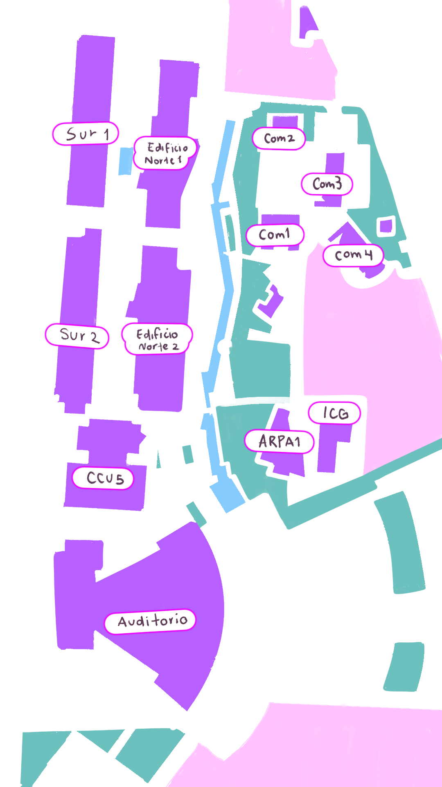

RECORRE EL ANDADOR ESCULTÓRICO
Mapa de los guardianes
Explora los puntos de interés del CCU BUAP. Selecciona cada marcador para conocer las obras y descubre el mapa mediante realidad aumentada.

EXPERIENCIA AUMENTADA
Explora el mapa en AR
Imprime este mismo mapa, abre la cámara y apunta hacia la hoja para descubrir los elementos digitales.
Permite el acceso a la cámara y coloca el mapa impreso sobre una superficie bien iluminada.